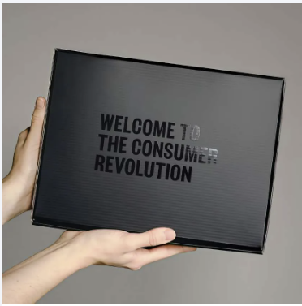
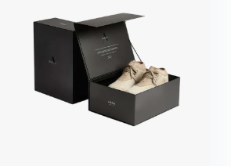

The running order for the call, in the order we will actually do it. Tick things off as we go, the tick is just for you so you can keep your place. Type notes in any box, they stay on your phone. The decisions get written down by Fil as we say them, so nothing depends on you touching this page. Built 8 September 2026.
One note on wording. Where this page says "us" or "all three", it means whoever holds the business on paper today, and it is only used for the things that turn on that: equity, the loan, the guarantee, signatures. It is not a headcount of who is in the room or who does the work.
Everything downstream moves with the day the order gets signed. Sixty days to make them, no early release, they all finish together. Then the boat. That is why sizes are first tonight and not last.
Three things, and if we only get three, these are the three:
Everything else on this page is worth doing and none of it is worth losing those three.
Nobody has bought a boot yet, so there is no real size data to go on. What we do have: 22 people on the list told us their size, and 17 of those 22 are between AU 9 and AU 12. Plus whatever you two see on site every day, which is honestly better data than the list.
AU 13 is probably ON, correcting what this page said earlier. Don has already built us an EU 48, it is one of the two test pairs sitting in Fil's house right now. The "no size 13" line came from a different factory's quote and should never have been applied to Don. Fil confirms the price and the timing with him in the size email. Treat 13 as in unless Don says otherwise, and the curve below gets a 13 line when he answers.
| Size | Pairs | Share |
|---|---|---|
| AU 6 | 10 | 2% |
| AU 7 | 25 | 5% |
| AU 8 | 55 | 11% |
| AU 9 | 100 | 20% |
| AU 10 | 120 | 24% |
| AU 11 | 100 | 20% |
| AU 12 | 90 | 18% |
| AU 13 | waiting on Don | - |
If Don confirms 13, those pairs come out of the 500 above, not on top of it. Most likely trimmed off 10 or 11 where the curve is thickest and least certain. That has to be said in the email or the total changes without anyone deciding it did.
The factory can make the magnetic front-opening box for 3 US dollars a pair, which is the bottom of what we thought it would cost. That is roughly 2,150 Australian across the whole run.
One thing to check before we say yes: does it ship flat. Five hundred already-built boot boxes take up more room on the ship than the boots do. Folding ones cut that by about ten times but we assemble them here, a couple of minutes each.
These are the two references Fil sent Don, so you are looking at the same thing he is.


The twenty dollar deposit existed to tell us what sizes to order. We are ordering off the trade read and the list instead, so it has no job left. We go straight to a proper presale at full price once the order is signed.
We are minuting this because in July all three of us voted for the deposit, and a thing three people voted for should not quietly disappear. Nobody is reopening it. Speak now if you want to.
All five of these were on the list for the 22 August meeting. None of them got a decision written down. Seventeen days later they are all still open, word for word. That is the pattern this block exists to break.
| What | Why it matters |
|---|---|
| Likeness releases | The one risk here that has already gone off: roughly 8.2 million views archived, Lionel threatened over his job, one post pulled and the appeal knocked back. Honest status: there is no document to sign yet. It is named in nine places across our own files and has never been written. Fil gets one drafted this week, then it is two minutes each. Agree tonight that we are all signing one. |
| Where the stock lives | Fil proposes: run one goes to Fil's house, rather than split three ways as the 22 August meeting ratified. If we agree that tonight it becomes one phone call instead of three, Fil checking his own home and contents actually covers about 35,000 dollars of trading stock, because most policies do not cover business stock at all. Until we agree it, the standing call is still all three houses, so Grant and Lionel should still check their own cover. |
| The Old Fella | Refilm him or retire him. The room leaned refilm last time but nobody actually called it, so it has been sitting as a maybe and blocking the filming plan. |
| Who fronts the launch video | Five minute call. It has been open for two weeks. |
| The paperwork night | Equal thirds is locked and has been since June. What is not on paper: the actual agreement, a start date, and what happens if one of us walks. Pick a date tonight. |
We have never written down which calls need all three of us and which ones Fil just makes. So every decision either waits for a meeting or gets made alone and feels like it was made behind someone's back. Both are bad and we have done both.
Fourteen days with nothing posted. Four Thursdays dark in a row before that. There are seven fully written comedy scripts nobody has ever filmed, plus 24 more scene ideas and three character refilms worth about 3.4 million views between them. The shortage is not ideas. It is a day with the three of us and a camera.
The three refilms we would do first: The Micromanager (2.89 million views), That One Bloke, The Close Enough Guy (best hold rate of the three refilms).
| Item | Our read |
|---|---|
| Socks | Not sorted, and the fix we had written was still wrong. Two separate faults, not one: no cushioning, AND they slide down the leg. Those are different problems and a firmer cuff does not fix the second one. The redraft also specs cotton when every real work sock on the market is acrylic based with spandex. The email is on hold until the spec is rewritten. No order until a corrected sample passes. |
| Socks and bags, 500 or 1,000 | 500 of each. Going to 1,000 socks saves about 850 dollars and parks about 2,700 in a garage against a second run we have not funded. |
| Slides for the first 100 | Do not gift them on run one. The real question is whether we sell slides at all. If yes, buy 500, gift 100, sell 400 and the gift pays for itself. |
| Why someone pays early | See the block under this table. This one got its own answer and it is not the numbered pair. |
| Meta glasses | For behind the scenes, filming days and days on site. That is a real use, first-person site footage is the one angle a phone on a tripod cannot get. Start with one pair on whoever is on site most and see how many clips actually make a post, then buy the other two. Roughly 599 each. Note they are not rated safety eyewear, so they sit beside site glasses, not instead of them. |
| TIACS | Start from scratch tonight, because Grant and Lionel have not been told what this even is. TIACS is a free text and call counselling service for tradies, staffed by real counsellors. The idea is FAR gives a set amount from every boot sold. Fil has already modelled 5 dollars a boot into the numbers, about 2,150 across the run and roughly 4 percent of gross profit, and never told anyone. What we decide tonight is whether that number still holds now you have heard it, not picking one off a blank page. Fil makes the contact himself, because it is a partnership to build, not a can-we-use-your-name email. If they are keen, the line goes on the box: a set amount from this pair funds tradie mental health. |
The numbered pair is out. Nothing anywhere says a tradie gets his wallet out because he is number 47, that mechanic comes from sneaker culture. It stays as a nice touch on the note in the box, not as the reason.
The lifetime boots draw. Checked properly today, and the idea survives with three changes.
Every incentive above is cheaper than the one nobody has done: a mate telling a mate. That is still the strongest thing we have and it is what the names list is for.
Each takes about two minutes. Every one of them has been asked for once already and not happened, which is not laziness, it is that a job asked for at the end of a call with nobody watching disappears. Doing them while we are all on the line is the whole trick.
Fil The size email to the factory. The certificate questions, drafted 3 August and still sitting unsent. The sock email, written this morning and still unsent. The lawyer and the accountant, never contacted. Bind the insurance. Book the paperwork night. Draft the likeness release.
Grant Send the other two the signed loan contract you are holding. Chase Tony for his read, it was due 24 August. Your 20 to 50 names in your own tab. The laptop. Message Ace when the page is live.
Lionel Your wear verdict on the sample. Your 20 to 50 names in your own tab. The email lane with Fil.
All three Sizes. The box. Filming date. Paperwork date. Who decides what. TIACS. Five names each in the contact sheet before we hang up.
Con Your 20 to 50 names in your own tab, same as everyone. Concepts into the group chat with Grant.
Ticks and notes on this page stay on your own phone. They are for keeping your place, not for recording anything. The decisions get written down by Fil during the call. The longer version of the ten items, with all the numbers behind them, is at the ten things. Every number here traces back to the business workspace. This link is unlisted, anyone holding it can open it.